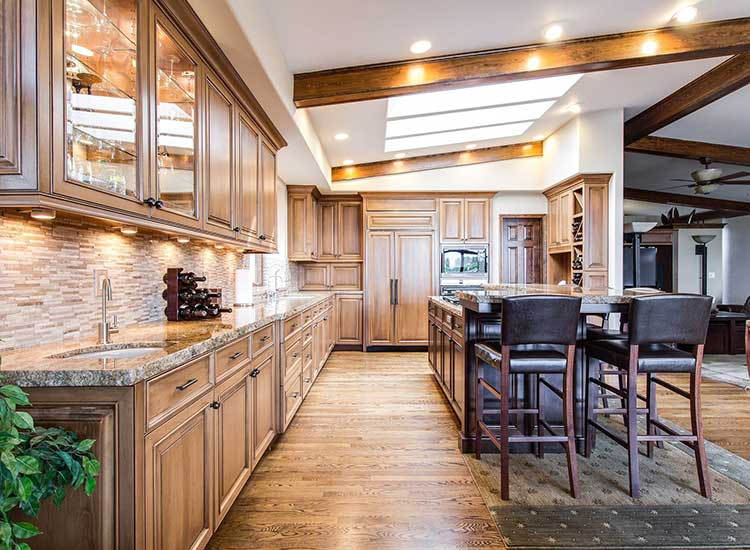

Risiko lain dari tidak adanya K3 dalam perusahaan adalah berkurangnya produktivitas dari tenaga kerja. Saat kondisi fisik mereka kurang optimal, tentu hasil kerjanya juga akan terganggu. Jika hal ini terjadi terus-menerus dan tidak ada upaya untuk mengatasinya, maka lama kelamaan bisa mengurangi produktivitas.
Apa saja tanda-tandanya? Mulai dari target yang tidak tercapai, kualitas produk atau layanan tidak sesuai dengan harapan, yang berujung pada ketidakpuasan konsumen dan terganggunya kesejahteraan para tenaga kerja.
Artinya taat atau patuh. Biasanya, orang dengan etos kerja yang baik akan patuh terhadap aturan di tempat kerja.
Menjalankan standar operasional prosedur (SOP) sebaik mungkin, selalu tepat waktu, dan berkomitmen terhadap hal-hal yang sudah direncanakan.
Sikap tersebut juga diimbangi dengan tanggung jawab yang tinggi. Paham bahwa selalu ada konsekuensi di balik setiap tindakan dan keputusan.
Mengatur jadwal serta urutan pekerjaan secara sistematis untuk memaksimalkan efisiensi dan keamanan kerja.
Kenali potensi bahaya di area kerja sebelum memulai tugas agar Anda bisa mengantisipasi kecelakaan.
Pakai perlengkapan keselamatan kerja yang sesuai dengan standar dan jenis pekerjaan Anda (seperti helm, sarung tangan, atau kacamata pelindung).